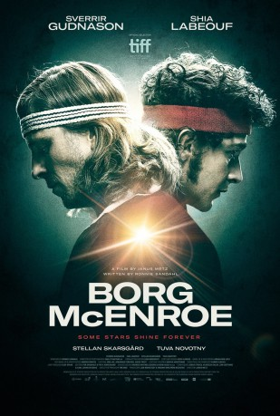

#8046 Borg McEnroe - Duell zweier Gladiatoren
Alternativ: Borg vs. McEnroe (Englischer Titel)
 gesehen am 28.01.2018
gesehen am 28.01.2018
 
 IMDB-Wertung: 7.0 / 10
IMDB-Wertung: 7.0 / 10  Metascore: 63
Metascore: 63 
The story of the 1980s tennis rivalry between the placid Björn Borg and the volatile John McEnroe.
BDRIP DUBBED
Jahr: 2017
Dauer: 107 Minuten
FSK: 0
Land: Schweden Studio: UFATonspuren: DD2.0 - ,
Untertitel: Deutsch,
Auflösung: 1080p (1920x808) Größe: 7976 MB
Genre: Drama, Sport, Biographie
Regisseur: Janus Metz
Drehbuch: Ronnie Sandahl
Soundtrack: Vladislav Delay, Jon Ekstrand, Carl-Johan Sevedag, Jonas Struck
Darsteller:
- Sverrir Gudnason als Björn Borg
 Shia LaBeouf als John McEnroe
Shia LaBeouf als John McEnroe Stellan Skarsgård als Lennart Bergelin
Stellan Skarsgård als Lennart Bergelin Tuva Novotny als Mariana Simionescu
Tuva Novotny als Mariana Simionescu- Jackson Gann als Young John McEnroe
- Scott Arthur als Peter Fleming
 Ian Blackman als John McEnroe Senior
Ian Blackman als John McEnroe Senior Robert Emms als Vitas Gerulaitis
Robert Emms als Vitas Gerulaitis David Bamber als UK Commentator George Barnes
David Bamber als UK Commentator George Barnes Jane Perry als Kay McEnroe
Jane Perry als Kay McEnroe Demetri Goritsas als Björn Borg's Agent 1
Demetri Goritsas als Björn Borg's Agent 1 Roy McCrerey als Björn Borg's Agent 2
Roy McCrerey als Björn Borg's Agent 2 Björn Granath als Bengt Grive
Björn Granath als Bengt Grive- Jason Forbes als Arthur Ashe
- Tom Datnow als Jimmy Connors
 Colin Stinton als Talk Show Host
Colin Stinton als Talk Show Host Claes Ljungmark als Mats Hasselqvist
Claes Ljungmark als Mats Hasselqvist- James Sobol Kelly als Phil - Johns Agent
- Janis Ahern als Psychologist
- Thomas Hedengran als Lennart Hyland
- Annika Ryberg Whittembury als Argentinian TV Reporter
- Bob Boudreaux als Mr. Henderson
- Jamie Marshall als British Commentator
- Val Jobara als Ille Nastase
- Marc Cram als American Commentator
- Stewart Moore als Sound Technican BBC
- Michael Pitthan als UK Reporter 1 Heathrow
 Jim High als UK Reporter 4 Press Conference
Jim High als UK Reporter 4 Press Conference- Linnea Tagesson als Air Hostess
- Zuzana Geislerová als Monaco Club Owner's Wife
- Jennifer K Preston als Café Guest 1
- Björn Andersson als Janitor
 Anders Berg als Södertälje Tennis Coach
Anders Berg als Södertälje Tennis Coach- Brendan Douglas als Umpire Wimbledon 2nd round
- Peter Hosking als Umpire Mcenroe Vs Connors
- Henrik Norman als Umpire Kungens Kanna SC19
- Christopher Wagelin als Ulf Nordal - Swedish Journalist (uncredited)
- Leo Borg als Young Björn Borg, age 9-13
- Marcus Mossberg als Young Björn Borg, age 15+
- Mats Blomgren als Rune Borg
- Julia Marko-Nord als Margareta Borg
- Dag Malmberg als Club Chairman Södertälje
- Jean Claude Okou als Tabac Owner
- Felix Engström als Tennis Coach Stockholm
- Inger Järpedal als Mrs. Henderson
 David Bowles als French Commentator
David Bowles als French Commentator- Richard Drazny als American Commentator 'Butch Waltz'
- Philipp Schenker als German Commentator
- Federico Cafaro als Argentinian TV Translator
- Vincent Eriksson als Brian Gottfried
Datei: X:\2017(A-F)\Borg McEnroe - Duell zweier Gladiatoren (2017, FSK0, 1920x808).mkv seit 19.01.2018
Festplatte: HD 2017(A-Z)-2018(A-F)
 Es gibt insgesamt 152 Filme in der Gruppe '2017(A-F)'
Es gibt insgesamt 152 Filme in der Gruppe '2017(A-F)'